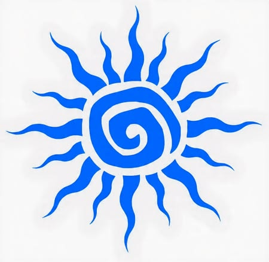
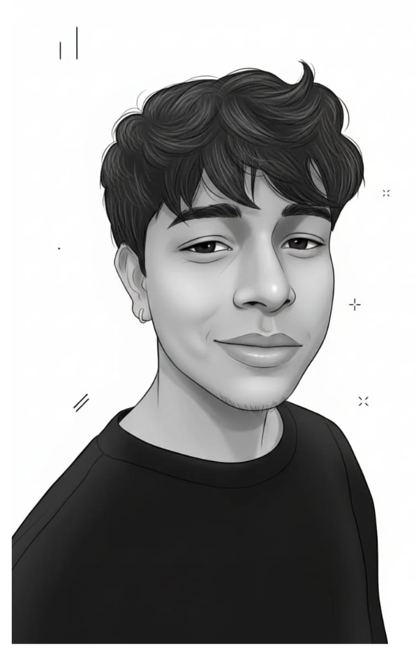

Discover
Define the client, market, mood, references, and the business goal behind the visual system.

Helios VisualsAbout the Studio
Helios Visuals is built for founders, creators, and teams who need a visual identity with presence. The studio approach blends strong logo thinking, editorial presentation, and campaign-ready assets that can move across digital channels with confidence.

About Me
I'm a creative graphic designer with a passion for creating posters, digital designs, and concept-based visuals. Inspired by trending internet culture, memes, and modern design styles, I enjoy turning ideas into engaging visual experiences. Through academic and personal projects, I have developed skills in graphic design, branding concepts, and social media creatives. I constantly explore new creative techniques and experiment with tools like Photoshop, Canva, and AI-powered platforms to enhance my workflow. As a designer, I am always learning, improving my skills, and exploring innovative ways to create impactful and visually appealing designs.
Working Style
Define the client, market, mood, references, and the business goal behind the visual system.
Build the core identity, campaign layouts, visual rules, and presentation frames.
Package polished files, social assets, and brand-ready visuals for launch.